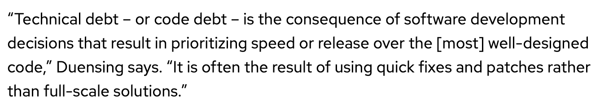

Content from Introduction
Last updated on 2025-01-02 | Edit this page
Estimated time: 0 minutes
Overview
Questions
- How to design research software
Objectives
- To understand design principles and to be able to apply them to research software
Why Design
- Investing some thought in design of software makes it possible to maintain, reuse and extend it
- Even if some research software (RS) begins its life as a one-off use case, it often gets reused
- Without proper design it is likely to accrete features haphazardly and become a monstrosity
- Acquires a lot of technical debt in the process 
Definition from https://enterprisersproject\.com/article/2020/6/technical\-debt\-explained\-plain\-english
In many ways technical debt works like monetary debt. If you don’t pay it off it compounds. The more technical debt you accrue, the more unmaintainable your software becomes.
Many projects have had this happen to them, and most of them end up with a hard reset and having to start over again
In this module we will cover general design principles and those that are tailored for scientific software
Several books are available on the topic of software design

…. and many more
So why do we have this module in the bootcamp ?
Motivation and Objectives
The first and foremost reason is the same as for taking any course that has good textbooks.
A practitioner with experience can make the ideas more accessible. Instructor can perceive when attendees are not following and therefore can try to present the same idea with a different approach and/or perspective. Practitioners also bring their own intuition and experience to the discussion which tend to enrich the information being imparted in a classroom setting.
There are other reasons why software design needs to be included in a research software engineering training. Most of software engineering research and literature targets enterprise software that is in production. Literature is sparse even for exploratory enterprise software. One reason is that understanding the requirements and devising strategies for design of exploratory software is difficult. For industry it may not even be a worthwhile expenditure because before being released and utilized for production all software likely goes through rigorous quality control.
Research software in academic setting is different because it is also the production software. Often exploration and production go hand in hand, which means that quality control is an ongoing process. Therefore it is important to understand methodologies for designing research software that meets research goals while maintaining its reliability without becoming an excessive burden on the developers and the users.
Key Points
- Investing in design is critical for reliable, maintainable and extensible software
Content from General Design Principles
Last updated on 2025-01-02 | Edit this page
Estimated time: 0 minutes
Overview
Questions
- What are most commonly used design principles?
Objectives
- To introduce common design principles
General Design Principles
Found on the web
- Encapsulate what varies
- Favor composition over inheritance
- Program to interfaces not implementations
- Loose coupling – interacting components should have minimal knowledge about each other
- SOLID
- Single responsibility
- Class/method/function should do only one thing
- Open/closed
- Open for extension, close for modification
- Liskov substitution
- Implementations of an interface should give same result
- Interface segregation
- Client should not have to use methods it does not need
- Dependency inversion
- High level modules should not depend on low level modules, only on abstractions
- Single responsibility
These are just some of the links that have more details on these design principles.
https://www.freecodecamp.org/news/solid-design-principles-in-software-development/ https://www.bmc.com/blogs/solid-design-principles/ https://bootcamp.uxdesign.cc/software-design-principles-every-developers-should-know-23d24735518e
Designing Software – High Level Phases
As shown in the figure above, software design has three phases: requirements gathering, decomposition, and understanding connectivity with that decomposition. These phases come one after another, though one can iterate over them as needed.
Requirements Gathering
In the requirement gathering phase the developers gather information about what is needed from the software. As an extremely simple example is writing an integer sorter. At first glance it appears that only requirement is to read in a bunch of integers, sort them in specified order, and output the sorted numbers. However a few other requirements may dictate actual implementation. For example:
- How large is the dataset – will simplest O(N2) method suffice or does one need O(NlogN) method
- Is the dataset large enough that a parallel sorting algorithm needed
- Is it a stand-alone code or is it going to be used in another code
(in other words does it handle I/O or needs to have arguments)
- If it needs I/O then what is format of input and output files
- If it has arguments what should the interface look like
It may seem like an obvious approach to take, but if you think a little about what is involved you will realize that failing to get these specifications will likely accrue some technical debt which will have to be paid later through modifications in the code.
Decomposition
Once requirements are known one can proceed to design components of the software. In the sorting example the simplest case of small dataset to sorted through a function call will have just one components. If it is a stand-alone piece of software then it may be divided into three components, one for I/O, one for sorting, and the driver that invokes the other two components. If it is a stand-alone parallel sorter then it may either incorporate parallelization in the driver, or may add another component to handle the parallelization.
Connectivity
This phase of design is devoted to understanding the interdependencies between components. In the stand-alone parallel sorting example with a separate parallelization component we infer the following connectivity:
- Driver knows all other components and invokes them as needed
- I/O is called by the Driver and no other component. If parallel I/O is being used then it needs to have an interface with the parallelization component
- Sorter is called by the driver, but it also needs access to the parallelization component
- Parallelization component is called by the driver and the sorter. It may also be called by I/O if we are using parallel I/O
One immediate concern that you may have is that this approach is not compatible with agile methodology. It is not because complete design of a complex software may need several iterations over the three phases. It need not all happen before development begins. It can happen anytime during the development cycle, and in all probability some or all of the phases may need to be reconsidered as understanding grows.
In the next section we will work through a real life application design.
Key Points
- FIXME
Content from Design Principles Application
Last updated on 2025-01-02 | Edit this page
Estimated time: 0 minutes
Overview
Questions
- What are some ways of using these principles
Objectives
- Work through a simple example
Example 1 – Problem Description
We have a house with exterior walls made of single material of thickness \(Lx\). The wall has some water pipes shown in the picture. The inside temperature is kept at 70 degrees. But outside temperature is expected to be -40 degrees for 15.5 hours.
The question we are trying to answer is – will the pipes freeze before the storm is over

In general, heat conduction is governed by the partial differential (PDE)…
| (1) |
where \(u\) is the temperature at spatial positions, \(x\), and times, \(t\), \(\alpha\) is the thermal diffusivity of the homogeneous material through which heat is flowing. This partial differential equation (PDE) is known as the Diffusion Equation and also the Heat Equation.
Simplifying Assumptions
To make the problem tractable for this lesson, we make some simplifying assumptions…
- The thermal diffusivity, \(\alpha\), is constant for all space and time.
- The only heat source is from the initial and/or boundary conditions.
- We will deal only with the one dimensional problem in Cartesian coordinates.
In this case, the PDE our application needs to solve simplifies to…
| (2) |
The code in the repository has three different numerical algorithms
- Foward Time Centered Space (FTCS), an explicit method
- Crank-Nicholson, an implicit method
- Upwind-15, another explicit method with higher spatial order than FTCS.
We will work through one of them – FTCS
Requirement gathering
- To solve heat equation we need:
- a discretization scheme
- a driver for running and book-keeping
- an integration method to evolve solution
- Initial conditions
- Boundary conditions
- To make sure that we are doing it correctly we need:
- Ways to inspect the results
- Ways of verification
Decomposition
- This is a small design space
- Several requirements can directly map to components – in this
instance functions
- Driver
- Initialization – data containers
- Mesh initialization – applying initial conditions
- Integrator
- I/O
- Boundary conditions
- Comparison utility
- Binning components
- Components that will work for any application of heat equation
- Driver
- Initialization – data containers
- I/O
- Comparison utility
- Components that are application specific
- Mesh initialization – applying initial conditions
- Integrator
- Boundary conditions
- Components that will work for any application of heat equation


Content from Design Principles for Reserach Software
Last updated on 2025-01-02 | Edit this page
Estimated time: 0 minutes
Overview
Questions
- How do design principles differ for research software
Objectives
- To understand design constraints for research software
Research Software Specific Challenges
For most of research software we have a positive feedback loop. When we start exploring some phenomenon we devise a mathematical model for it. In the initial stages one typically focuses on one or two most accessible aspects of the problem. So one makes simplifying assumptions. As understanding grows one starts to relax the simplifying assumptions and the model grows more complex. A more complex problem will usually need more complex software and more hardware resources. The more complex problem will in turn lead to greater understanding … and thus the positive feedback loop persists.
This process leads to several challenges that are unique to RS
- Many parts of the model and software system can be under research
- Requirements change throughout the lifecycle as knowledge grows
- Real world is messy, it does not always yield to easy componentization
- Connectivity may become very complex
- Access to hardware resources may demand efficiency in computation that can be at odds with modularization
An addition challenge is faced by scientific software in that verification is complicated by floating point representation
SOLID Principles Pose Some Difficulties
As shown in the figure, some of the SOLID principles do not work too well with RS. For example the Single Responsibility princple can become difficult to follow when there is a lot of lateral interaction become components and computational efficiency demands fusion of operations. In general greater understanding tends to lead to tighter coupling among components. Open/closed principle run into problem when new insights need invasive alteration of either the numerical method or specific implementation details. To avoid unnecessary code duplication it may be best to allow modification in the existing code. Lateral interactions and tight coupling among interfaces can often make it difficult to segregate interfaces, or to avoid dependency inversion.
We will see examples of some of these challengs that we work through in the next section
Additional Considerations for Research Software
Some additional considerations come into play for designing RS that may not be needed for enterprise software. These are:
Many RS projects have interdisciplinary teams, and many different types of expertise are needed to put together the whole software. It is not possible for all the team members to know all aspects of software development. Some understanding of everything is necessary for needed interactions, but in-depth knowledge of everything is simply not possible. Therefore, the design should permit separation of concerns. For example, in a multiphysics simulation software the design should be such that the domain scientists can focus on their specific physics model and its descretization, applied mathematicians can focus on details of numerical methods and the performance engineers can work on optimization.
In an earlier section about phases of design we had mentioned “types” of components and binning them. A base framework that acts as the substrate on which capabilities can grow is important for most RS. Therefore, one should differentiate between components that need to provide that stability, such as the discretization models, I/O, book-keeping, and other infrastructural support, and those that provide the needed capabilities such as physics models. The number of initial interations of the three design phases differ for the different component types. The former should be near final in design before the latter begin to be embedded in the code. The physics components should follow agile methodology much more diligently, and be nimble to be able to incorporate new discoveries in the code rapidly.
During design thought should be given to extensibility build into the framework and in other components.
Key Points
- Design principles need to be adapted for research software
Content from Research Software Design Example
Last updated on 2025-01-02 | Edit this page
Estimated time: 0 minutes
Overview
Questions
- FIXME
Objectives
- To work through an example of research software design
More Complex Application Design – Sedov Blast Wave
Description
Domain is initialized with pressure spike at the center of the domain. The resulting shock moves out along the radial direction as an expanding circle in two dimension, or a sphere in three dimension. High resolution is needed only at and near the shock, so it is good to use adaptive mesh refinement.
- Requirements
- Adaptive mesh refinement
- Easiest with finite volume methods
- Driver
- I/O
- Initial condition
- Boundary condition
- Shock Hydrodynamics solver
- Ideal gas equation of state
- Method of verification
Deeper Dive into Requirements
Adaptive mesh refinement (AMR) implies that the spacing between discretized points varies in different sections of the domain. AMR is a method by which data and computation needed are compressed for a computation without significant loss in fidelity. This is especially true when large swaths of domain have little to no activity, while localized portion need a very fine resolution. In Sedov blast wave problem high resolution is needed only along the moving shock, the remainder of the domain can have low resolution.
A standard way of using AMR is to divide domain into block where the distance between points within a block is identical, but different blocks may have different spacing. Blocks may go in and out of existence depending upon how the needs for higher resolution move within the domain. AMR is frequently used with explicit methods, where a block surrounded by a halo of points filled from neighboring blocks form a stand-alone computational domain. Physics operators cannot differentiate between such block with halo cells from the entire domain. Therefore decomposition into blocks serves as a very useful abstraction for spatial discretization. When using AMR some additional machinery is needed to reconcile physical quantities at fine-coarse boundaries.
The mathematical model used for solving Sedov blast wave problem is Euler’s equations of hydrodynamics in a conservative mode. For these eqations, equation of state (EOS) provides closure, and Riemann solution is needed when there are discontinuited introduced by shocks. The reason why many implementations of shock hydrodynamics use Sedov as their test case is because a known analytical solution exists for how far the shoch has travelled.
To summarize the requirements for solving the Sedov problem we need: * AMR * halo cell filling included at fine-coarse boundaries through interpolation * reconciliation of fluxes at fine-coarse boundaries * regridding with solution evolution * Riemann solver at discontinuities * EOS * Application of EOS during halo cell fill at fine-coarse boundaries * Verification against known analytical solution for distance the shock has traveled.
Components
- Deeper Dive into some Components
- Driver
- Initialize the domain, supply initial conditions, setup I/O
- Iterate over blocks
- Implement connectivity
- Mesh
- Owns data containers
- Implements halo cell fill, including application of boundary conditions
- Reconciliation of quantities at fine-coarse block boundaries
- Remesh when refinement patterns change
- I/O
- Getting runtime parameters and possibly initial conditions
- Writing checkpoint and analysis data
- Binned Components
- Unchanging or slow changing infrastructure
- Mesh
- I/O
- Driver
- Comparison utility
- Components evolving with research – physics solvers
- Initial and boundary conditions
- Hydrodynamics
- EOS
Exploring design space – Abstractions
We consider the possibilities of abstractions as a first step in design. In this example we are looking at two types of decompositions: spatial and functional. The spatial decomposition uses a block as abstraction where for functional components there is no way to differentiate between the block and the whole domain. Functional decomposition assumes that physics operators are applied one at a time, and therefore they form the functional decomposition. Once we have these abstractions in place we have to consider other design considerations described below
Other Design Considerations
Data scoping – which data items are visible to which portions of a component
Interfaces in the API – a minimum set of accessor and mutator functions needed to provide the needed funcionality
-
For example consider the minimal Mesh API needed to provide infrastructural support
- Initialize_mesh
- Halo_fill
- Access_to_data_containers
- Reconcile_fluxes
- Regrid
Takeaways So far
Differentiate between slow changing and fast changing components of your code
Understand the requirements of your infrastructure
Implement separation of concerns
Design with portability, extensibility, reproducibility and maintainability in mind
Key Points
- More complex requirements gathering and connectivity and -implications on design
Content from Challenges of Heterogeneity
Last updated on 2025-01-02 | Edit this page
Estimated time: 0 minutes
Overview
Questions
- What new challenges are posed heterogeneous computers
Objectives
- To understand the challenges to design posed by heterogeneity in computers
New Paradigm Because of Platform Heterogeneity
Addition of hardware accelerators has added another dimension to design considerations. Now the positive feedback loop cycle described before also includes growing complexity due to different type of devices in play. The figure below shows the axes of growing complexity for software design.

Question - do the design principles change?
The answer is – not really
The details get more involved


Content from Design for Heterogeneity
Last updated on 2025-01-02 | Edit this page
Estimated time: 0 minutes
Overview
Questions
- How should one design software for heterogeneous platforms
Objectives
- To understand how research software design needs to adapt for heterogeneous platforms
Underlying Ideas: Unification of Computational Expressions
Make the same code work on different devices
-
Same algorithm different data layouts or operation
sequence:
- A way to let compiler know that ”this” expression can be specialized in many ways
- Definition of specializations
- Often done with template meta-programming
-
More challenging if algorithms need to be fundamentally
different
- Support for alternatives
Underlying Ideas: Moving Work and Data to the Target
Parallelization Models
-
Hierarchy in domain decomposition
- Distributed memory model at node level – still very prevalent, likely to remain so for a while
- Also done with PGAS models – shared with locality being important
Assigning work within the node
“Parallel For” or directives with unified memory
Directives or specific programming model for explicit data movement
More complex data orchestration system for asynchronous computation
Task based work distribution
Underlying Ideas: Mapping Work to Targets
This is how many abstraction layers work
Infer the structure of the code
Infer the map between algorithms and devices
Infer the data movements
Map computations to devices
These are specified either through constructs or pragmas
It can also be the end user who figures out the mapping
In either case performance depends upon how well the mapping is done
Content from Conclusions
Last updated on 2025-01-02 | Edit this page
Estimated time: 0 minutes
Overview
Questions
- None
Objectives
- Summarize learning for the design module
Final takeaways
- Requirements gathering and intentional design are indispensable for sustainable software development
- Many books and online resources available for good design principles
- Research software poses additional constraints on design because of
its exploratory nature
- Scientific research software has further challenges
- High performance computing research software has even more challenges
- That are further exacerbated by the ubiquity of accelerators in platforms
- Separation of concerns at various granularities, and abstractions enable sustainable software design
Resources
https://doi.org/10.6084/m9.figshare.13283714.v1
https://www.exascaleproject.org/event/kokkos-class-series
A Design Proposal for a Next Generation Scientific Software Framework
Software Design for Longevity with Performance Portability
Key Points
- Investing in design is critical for reliable, maintainable and extensible software